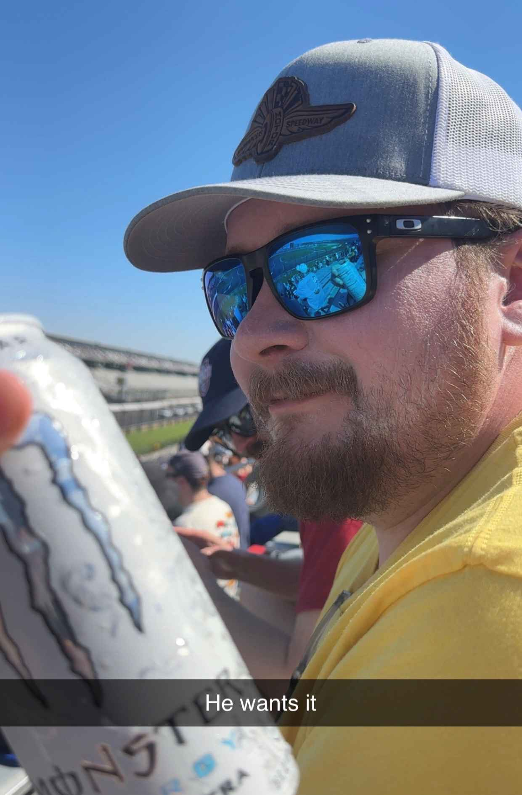
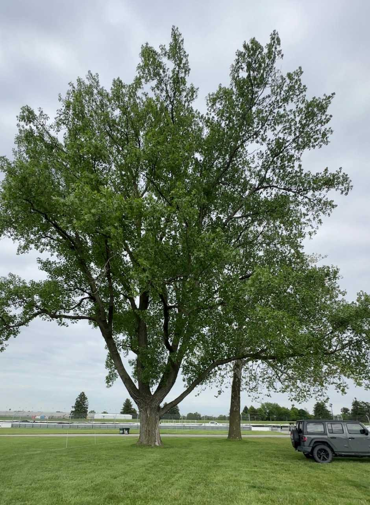
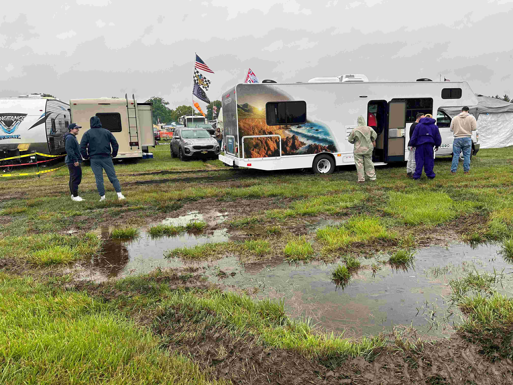
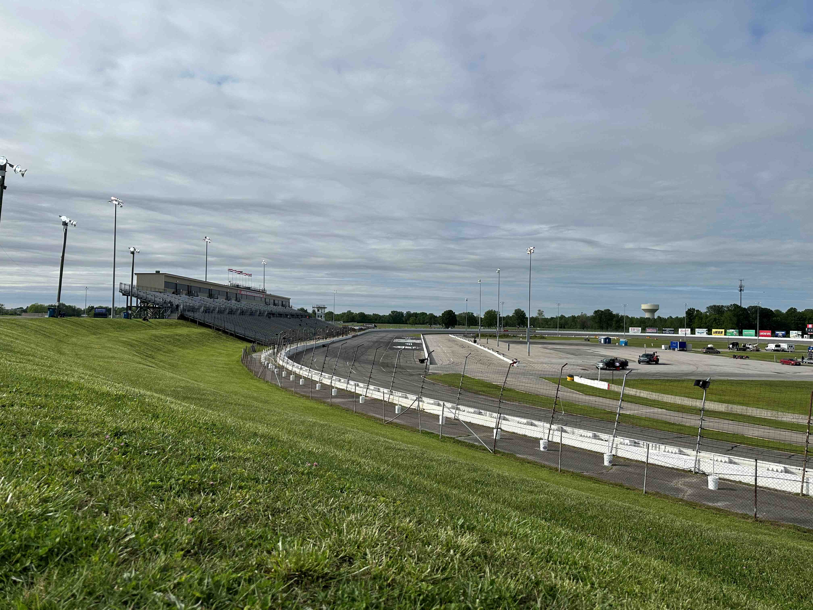
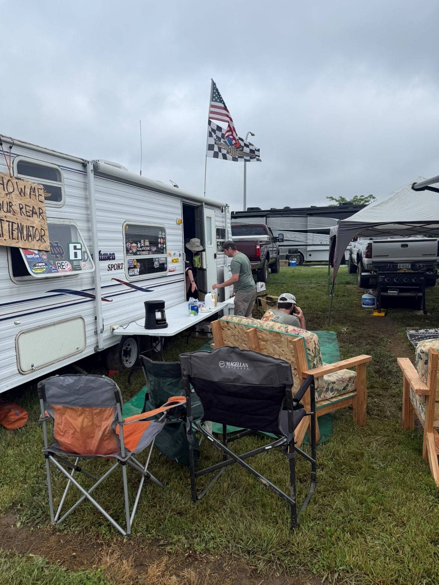
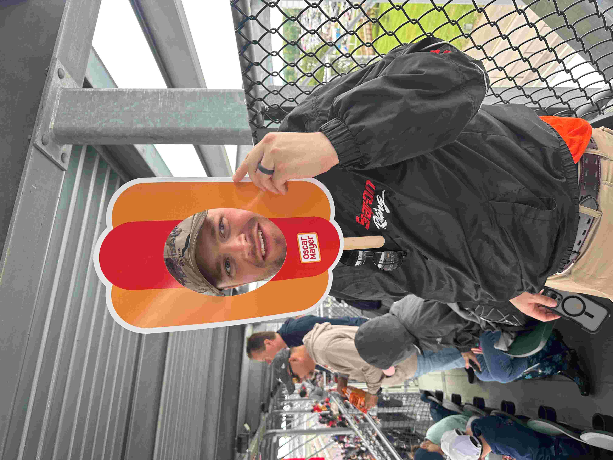

Open testing took place April 28th and 29th this year. I made it out during my lunch break on the second day. May 8th I attended practice/qualifying/support races for the Grand Prix. Kyle and I met Eric at the track the next morning for a race we were all sure would be the Alex Palou show. Turns out we were wrong and Christian Lundgaard pulled off a win. There was a distraught Malukas fan in front of us in J stand. This was probably the best 'dry' Grand Prix I've seen.

Left work a little early for Fast Friday on the 15th. Stood in North Vista for a while, walked the garage, and visited the two infield Pressley Farm trees. You should see them while you still can!

Rain cut down qualifying from two days to just one. Without enough cars to have a bump day, I didn't think there needed to be two days anyway. Kyle and I sat high in stand E when we showed up too late for our usual spot in E Penthouse. Alex Palou got his second Indy 500 pole.
It was a rainy few days leading up to our move-in this year. I still had PTSD from 2019 and was nervous about how the grounds would be when we arrived. Thankfully, it was nothing we couldn't handle with a little 4 wheel drive, momentum, and the kind of driving skill that makes women flock to our site. Others had a tougher time in their motorhomes.

We got settled in our usual spot in the North West corner of 1A. We arrived even earlier than usual this year and still only barely got where we wanted. May have to get up even earlier in '27! Brought two campers again this year. The Dutchmen and then Fogle's camper. It's nice that we have grown and don't have to share beds anymore. Mowed our site and took part in everyone's favorite Thursday tradition...sitting around and waiting. There's not much to do on Thursday.
The Hoosier Hundred at Indianapolis Raceway Park was postponed to June and the Carb Night Classic Freedom 75 & Freedom 90 were moved up a day. So I went out to IRP Thursday evening.

My expectations for a crowd were low, but it was pitiful. Which is a shame, because those USF2000 guys put on a couple of great races! The concession food was terrible as usual. Someday I will learn my lesson and bring my own food.

Kyle broke the sink in my camper Thursday night. He says it was an accident but I think he was lashing out about the terrible weekend forecast. An early morning Home Depot run on Friday had us back in business. Showers are an important part of the weekend when you bunk with five men in each camper.

Carb day was largely a success. The entire practice got in uninterrupted. The Oscar Mayer Weenie race got in too. Pit stop competition had barely started before rain ended it. We made our way to the infield for Switchfoot and Counting Crows. Switchfoot was fine. Counting Crows sucked. Cool and rainy weather conditions had the women too covered up. After a half-assed performance of 'Mr. Jones,' Buoy and I went to the gift shop and the camper. The rest of the guys were not far behind.